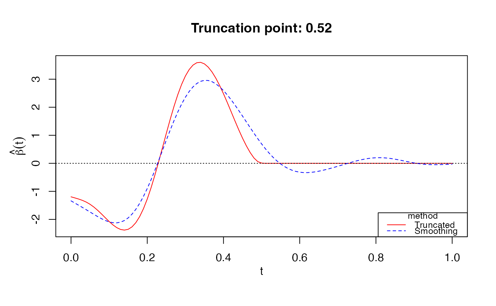
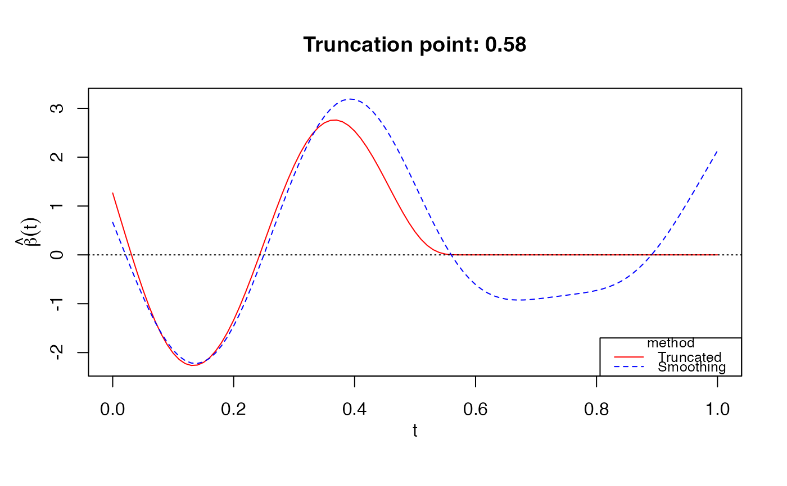

Fit a truncated Functional Generalized Linear Model
fglm_trunc.RdFit a truncated functional linear or logistic regression model using nested group lasso penalty. The solution path is computed efficiently using active set algorithm with warm start. Optimal tuning parameters (\(\lambda_s, \lambda_t\)) are chosen by Bayesian information criterion (BIC).
Usage
fglm_trunc(
Y,
X.curves,
S = NULL,
grid = NULL,
family = c("gaussian", "binomial"),
degree = 3,
nbasis = NULL,
knots = NULL,
nlambda.s = 10,
lambda.s.seq = NULL,
precision = 1e-05,
parallel = FALSE
)Arguments
- Y
n-by-1vector of response. Each row is an observed scalar response, which is continous for family="gaussian" and binary (i.e. 0 and 1) for family="binomal".- X.curves
n-by-pmatrix of functional predictors. Each row is an observation vector atpfinite points on[0,T]for someT>0.- S
(optional)
n-by-smatrix of scalar predictors. Binary variable should be coded as numeric rather than factor.- grid
A sequence of
ppoints at whichXis recorded, including both boundaries0andT. If not specified, an equally spaced sequence of length p between 0 and 1 will be used.- family
Choice of exponential family for the model. The function then uses corresponding canonical link function to fit model.
- degree
Degree of the piecewise polynomial. Default 3 for cubic splines.
- nbasis
Number of B-spline basis. If
knotsis unspecified, the function choosenbasis - degree - 1internal knots at suitable quantiles ofgrid. Ifknotsis specified, the value ofnbasiswill be ignored.- knots
kinternal breakpoints that define that spline.- nlambda.s
(optional) Length of sequence of smoothing regularization parameters. Default 10.
- lambda.s.seq
(optional) Sequence of smoothing regularization parameters.
- precision
(optional) Error tolerance of the optimization. Default 1e-5.
- parallel
(optional) If TRUE, use parallel
foreachto fit each value oflambda.s.seq. Must register parallel before hand, such as doMC or others.
Value
A list with components:
- grid
The
gridsequence used.- knots
The
knotssequence used.- degree
The degree of the piecewise polynomial used.
- eta.0
Estimate of B-spline coefficients \(\eta\) without truncation penalty.
- beta.0
Estimate of functional parameter \(\beta\) without truncation penalty.
- eta.truncated
Estimate of B-spline coefficients \(\eta\) with truncation penalty.
- beta.truncated
Estimate of functional parameter \(\beta\) with truncation penalty.
- lambda.s0
Optimal smoothing regularization parameter without truncation chosen by GCV.
- lambda.s
Optimal smoothing regularization parameter with truncation chosen by BIC.
- lambda.t
Optimal truncation regularization parameter chosen by BIC.
- trunc.point
Truncation point \(\delta\) where \(\beta(t)\) = 0 for \(t \ge \delta\).
- alpha
Intercept (and coefficients of scalar predictors if used) of truncated model.
- scalar.pred
Logical variable indicating whether any scalar predictor was used.
Details
Details on spline estimator
For an order q B-splines (q = degree + 1 since an intercept is used) with k internal knots 0 < t_1 <...< t_k < T,
the number of B-spline basis equals q + k. Without truncation (\(\lambda\)_t=0), the function returns smoothing estimate that is
equivalent to the method of Cardot and Sarda (2005), and optimal smoothing parameter is chosen by Generalized Cross Validation (GCV).
References
Xi Liu, Afshin A. Divani, and Alexander Petersen. "Truncated estimation in functional generalized linear regression models" (2022). Computational Statistics & Data Analysis.
Hervé Cardot and Pacal Sarda. "Estimation in generalized linear models for functional data via penalized likelihood" (2005). Journal of Multivariate Analysis.
Examples
# Gaussian response
data(LinearExample)
Y_linear = LinearExample$Y
Xcurves_linear = LinearExample$X.curves
fit1 = fglm_trunc(Y_linear, Xcurves_linear, nbasis = 50)
print(fit1)
#>
#> Call: fglm_trunc(Y = Y_linear, X.curves = Xcurves_linear, nbasis = 50)
#>
#>
#> Optimal truncation point: 0.52
plot(fit1)

# Bernoulli response
data(LogisticExample)
Y_logistic = LogisticExample$Y
Xcurves_logistic = LogisticExample$X.curves
fit2 = fglm_trunc(Y_logistic, Xcurves_logistic, family="binomial", nbasis = 50)
print(fit2)
#>
#> Call: fglm_trunc(Y = Y_logistic, X.curves = Xcurves_logistic, family = "binomial", nbasis = 50)
#>
#>
#> Optimal truncation point: 0.58
plot(fit2)

# Parallel (NOT RUN)
# require(doMC)
# registerDoMC(cores = 4)
# fit3 = fglm_trunc(Y_linear, Xcurves_linear, nbasis = 50, parallel = TRUE)